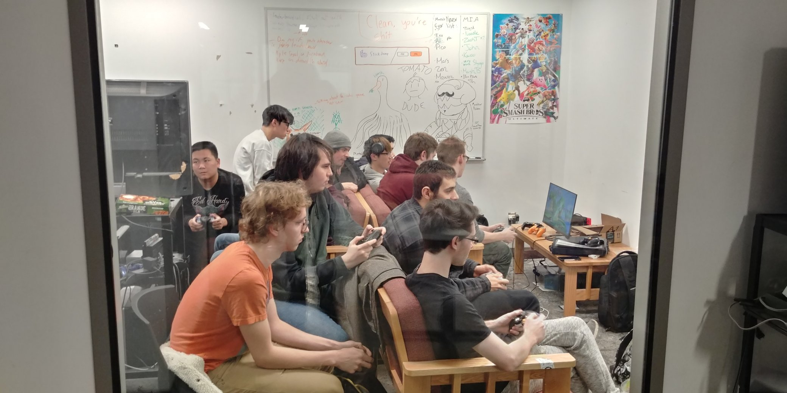
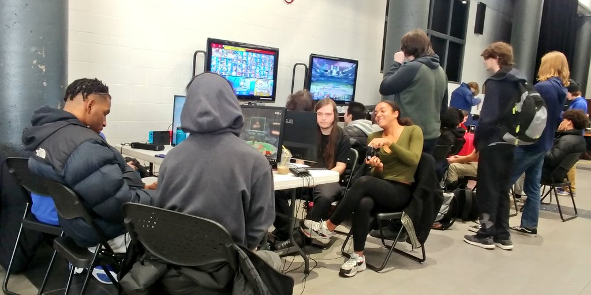
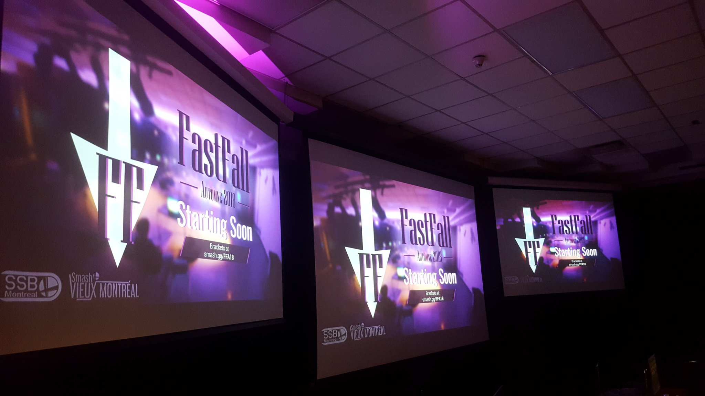

Technical
Stuff

We mainly play Super Smash Bros Melee (on Nintendo GameCube) and
Ultimate (on Nintendo Switch). But sometimes we also play other games such as
"Mario Kart 8" and "Punch Out!!". We have a total of 1 GameCube (with 4 controllers)
and 3 Switches (with 8 joycons), but feel free to bring your own!
We use computer monitors as screens and usually have about 5.
For big events we also use a projector.
Local
Tournaments

Local tournaments take place every week.
We alternate between Super Smash Bros Melee and Super Smash Bros Ultimate.
The winner of the tournament usually earns $50!
If there are enough beginners, a beginner tournament will take place along with
the normal tournament. Feel free to come to spectate too!
From time to time, we stream our tournaments and show highlights on our Twitch channel!
Montreal
Tournaments

If you are super good at Smash, you could represent John Abbott College in
Montreal-wide Smash tournaments! In 2018, for instance, our school made it in
the finals of FastFall. Compete against the best players in the city and make
a name for yourself! It's a great event if you wish to become a professional
Smash player! You also get to meet awesome people!